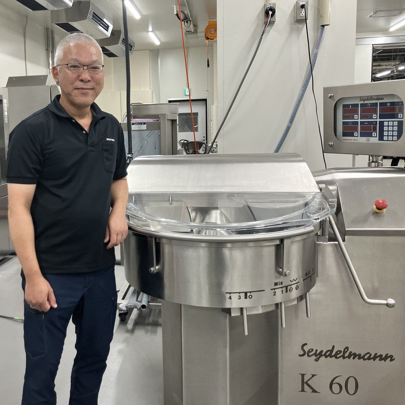
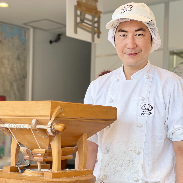

MULTIVAC JAPAN Local Innovation Center
食品・工業製品・医療機器の包装最適化から
食品の加工品質向上・利益率改善・商品開発サポートまで。
実機と実製品による検証で、お客様ごとの最適解を導きます。
MULTIVAC JAPAN Local Innovation Center（LIC）は、お客様の原料や製品を使用し、食品の加工・包装テスト、食品・家庭用品・工業製品・医療機器の包装テスト、商品開発、工程改善を行う実証拠点です。加工方法、包装技術、包装資材、設備構成を比較・検証し、品質、生産性、コスト、流通条件などを総合的に考慮したソリューションをご提案します。
包装テストに対応するテスト金型
包装テスト用の多彩なテストフィルム
お客様の原料・製品を持ち込んでテスト
食品の加工・成形・充填・包装を一貫して検証
複数の設備、加工方法、包装技術、包装資材を比較
LICには、300種類以上のテスト金型、多彩なテスト用フィルム、深絞り包装機、スキンパック専用深絞り包装機、トレーシーラー、チャンバー型真空包装機などの包装設備に加え、食品の加工、成形、充填、定量化、ベーカリー製品の製造に対応する設備を備えています。
単なるショールームやテストセンターではありません
MULTIVAC JAPAN Local Innovation Center（LIC）とは、食品の加工・包装テストと、食品・家庭用品・工業製品・医療機器などの包装テストを、実機と実製品で行うムルチバック・ジャパンの実証拠点です。包装仕様の最適化、賞味期限の延長、包装資材の見直し、輸出対応、食品の商品開発、歩留まり改善、自動化、省人化など、お客様が抱える課題を実際の原料や製品を用いて検証します。包装機、食品加工機、包装資材、検査・自動化技術を組み合わせ、機械単体ではなく、加工・包装工程全体の視点から、お客様の製品や製造環境に適したプロセスの構築を支援します。設備や包装方法が決まっていない段階でもご相談いただけます。
このような課題をご相談いただけます
気になる課題を選択すると、LICで検証できる内容をご覧いただけます。
製品と流通条件に適した包装を検証します
製品の形状や特性、求められる品質、流通・保管条件、販売形態などを踏まえ、包装技術、包装形態、包装資材、包装条件を比較します。包装後の品質や外観だけでなく、包装資材の使用量、作業性、物流・保管効率なども考慮し、製品ごとに適した包装仕様を検討します。
製品供給から包装後の搬送まで、工程全体を検証します
製品供給から包装、印刷、検査、選別、搬送まで、包装工程全体を見据えた自動化・効率化を検討します。実製品によるテストを通じて、製品を安定して供給できるか、目標とする包装品質や生産能力を確保できるかを確認し、お客様の製品と生産条件に適したライン構成をご提案します。
工業製品では、自動連続包装や自動投入ロボットとの連動による省人化・生産能力向上を検討できます。医療機器では、自動投入、印刷、検査、シール、良品・不良品の選別を含む包装ラインの構築を支援します。
包装機、製品、包装資材の組み合わせを検証します
ムルチバック・ジャパン包材部開発課と連携し、包装資材の選定・評価や、新しい包装フィルムの共同開発を行います。フィルム単体の性能だけでなく、内容物との相性、成形性、シール性、包装機での安定稼働などを実機で確認します。品質、生産性、コスト、環境対応の観点から、製品に適した包装資材を検討します。
加工条件と工程を比較し、生産性向上を支援します
食品加工工程を実機で検証し、歩留まり、原料使用量、定量精度、生産能力、品質再現性、作業性などを比較します。加工方法、設備、工程構成を見直すことで、品質を維持・向上しながら、原料ロスの削減、工程の効率化、省人化、利益率改善を支援します。
輸出する商品と流通条件に適した加工・包装工程を検討します
食品を輸出する際には、輸出先国・地域の規制や取引先の要求に応じた施設・設備、衛生管理、品質保持などが求められる場合があります。LICでは、輸出する商品や流通条件を踏まえ、食品加工機、包装機、包装資材、検査・自動化技術を組み合わせた設備・工程を実機で検証します。加工・包装後の品質、賞味期限、生産能力、作業性、衛生性、温度管理、検査、トレーサビリティなど、輸出を見据えた製造・包装ラインの構築を支援します。
※LICでは、輸出対応を見据えた加工・包装設備、包装資材、工程構成などの検討と実機検証を支援します。輸出先国・地域の規制、認定・認証および補助事業の対象要件については、関係機関または各分野の専門家へご確認ください。
アイデアを、実際の商品へ
原料や加工方法の検討から、成形、充填、定量化、包装、保存・流通方法までを組み合わせ、新商品や新カテゴリー商品の開発を支援します。試作品を作るだけでなく、実際の製造現場への展開を見据え、生産能力、品質再現性、歩留まり、包装適性などを確認します。
製品の固定・保護から、物流効率の改善まで
電子部品、半導体関連製品、精密機器、各種工業部品などを対象に、製品の形状や特性、輸送・保管条件に適した包装を検討します。実製品を用いた包装テストにより、製品の固定・保護、防湿・防塵・防錆、包装のコンパクト化、副資材の削減、自動化など、製品ごとの課題に適した包装仕様を導き出します。
電子部品、半導体関連製品、精密機器、ボールベアリング、チェーン、切削工具、サービスパーツ、消耗品など、さまざまな工業製品の包装をご提案します。
製品と製造環境に適した包装仕様を検討します
医療機器の形状、包装材料、製造環境、求められる包装品質を踏まえ、包装形態、包装資材、成形・シール条件などを検討します。実製品によるサンプルテストを通じて各条件を確認し、お客様が実施する各種評価やバリデーションを見据えた包装仕様の構築を支援します。
メディカル製品向け包装機は、硬質・軟質プラスチックフィルム、アルミニウム多層フィルム、滅菌紙、タイベック®などに対応し、印刷、検査、自動投入、不良品選別を含むライン構成を検討できます。
LICの大きな特徴は、一つの設備で加工や包装を試すだけでなく、同じ原料・製品に複数の加工方法、包装技術、包装資材を適用し、その違いを比較できることです。
同じ原料を異なる加工設備や条件で処理し、製品品質や生産性の違いを確認します。
比較項目
比較設備の一例
Seydelmann ボウルカッター ／ Stephan UMシリーズ ／ Stephan MCシリーズ
同じ製品に異なる包装技術、包装資材、包装条件を適用し、包装後の品質、作業性、資材使用量などを比較します。
比較内容
評価項目
テストの目的に応じて、外部施設と連携し、次のような評価を行うことも可能です。
実際の製造現場への展開を見据えて検証します
試作品として成立することと、安定して量産できることは同じではありません。LICでは、試作結果をもとに、生産能力、品質再現性、歩留まり、作業性、清掃性などを確認し、実際の製造現場への展開を見据えた加工・包装工程の構築を支援します。
複数の加工設備や条件を使用した同じ原料による比較テストにより、商品開発、品質改善、製造技術向上をサポートします。DLGコンテスト審査員を務めるドイツ国家認定食肉加工マイスターによる製造技術支援も魅力です。
ベーカリー製品の開発・量産検証
クロワッサン、デニッシュ、プレッツェルをはじめとするベーカリー製品の生地開発、成形、包装、ロングライフ化、冷凍流通対応を支援します。
日本に数名しかいないドイツ国家認定製パンマイスターによる監修や、ドイツ本社のFRITSCHドウスペシャリストによる技術支援・講習会も実施しています。

ドイツ国家認定 食肉加工マイスター
Seiji Hayashi
LIC（ローカルイノベーションセンター）所属
ドイツ国家認定「食肉加工マイスター」資格を取得し、DLG国際品質競技会の食肉部門評価員としても活動。LICでは、ハム・ソーセージを中心とした商品開発、品質改善、製造技術の向上を支援しています。
支援内容

ドイツ国家認定製パンマイスター
Takeshi Yamamoto
WOB（ワールドオブベーカリー）監修
ドイツ国家認定の製パンマイスター資格を取得し、現在は本格ドイツパン専門店「アムフルス」を運営。日本では数少ないドイツ製パンマイスターとして、本場で培った製パン技術を日本に伝えています。World of Bakery（WOB）では、生地づくり、成形、発酵、焼成をはじめとした製パン技術と商品開発を監修します。
支援内容
MULTIVACグループが世界各地で蓄積してきた技術や事例を、日本の原料、品質基準、流通、販売形態、製造環境に合わせて活用します。海外の事例をそのまま持ち込むのではなく、日本国内の現場課題と結び付け、お客様の製品と製造環境に適したソリューションを構築します。
活用する知見の一例
対象製品、現在の包装・加工工程、課題、目標とする品質、生産量、流通条件、ご希望時期などを確認します。具体的な設備や包装方法が決まっていない段階でもご相談いただけます。
加工や包装に求める条件を整理し、使用設備、原料・製品、包装資材、比較条件、評価項目などを含むテスト内容をご提案します。
テスト内容に応じて、お客様の原料、製品、包装資材などをご用意いただきます。必要に応じて、テスト用の包装資材や金型をムルチバック・ジャパンで準備します。
実際の原料や製品を使用し、加工条件、包装技術、包装資材などを変更しながら検証します。複数の加工設備、包装方法、包装資材を使用した比較テストも可能です。
品質、歩留まり、生産能力、包装状態、作業性、包装資材使用量、コストなど、目的に応じた項目を確認します。必要に応じて、外部施設と連携した評価も検討します。
検証結果をもとに、設備、包装資材、加工・包装条件、自動化範囲、工程構成など、お客様の目的に適したソリューションをご提案します。
MULTIVAC JAPAN Local Innovation Centerは、ムルチバック・ジャパン株式会社つくば本社工場内にあります。LICの見学や実機テストは、事前予約制です。
原料、製品、包装資材などの搬入方法やご来場時の注意事項については、テスト・見学内容に応じて事前にご案内します。
設備や包装方法が決まっていなくても問題ありません。製品、加工工程、包装、品質、生産性、歩留まり、包装資材、物流などのお悩みを伺い、LICで検証できる内容をご提案します。
ご相談いただける内容
包装テスト包装サンプルの試作食品加工テスト食品の商品開発輸出対応を見据えた設備・工程検証歩留まり・利益率改善包装工程の自動化・省人化包装資材の開発・評価工業製品の包装医療機器の包装試作から量産化への検証ハム・ソーセージ講習会ベーカリーインハウスセミナー技術セミナー・実機トレーニングLICの見学